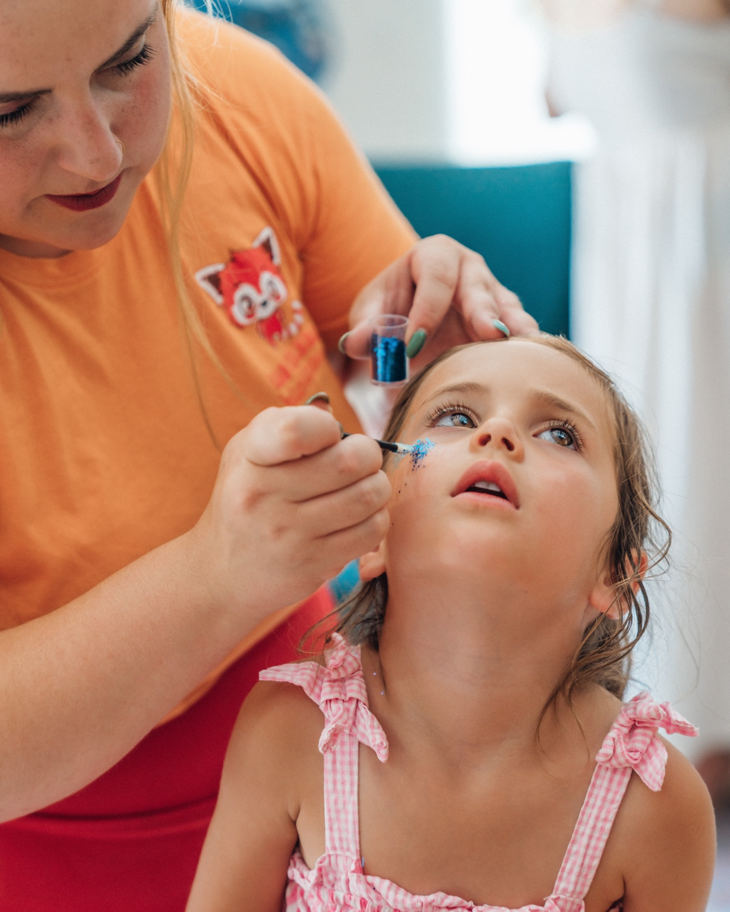
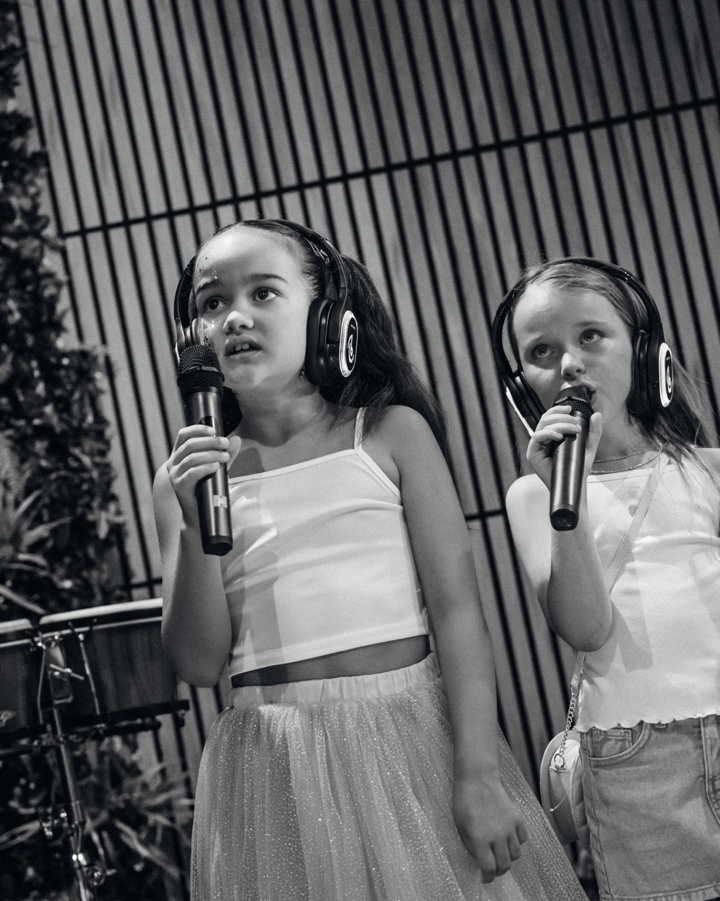
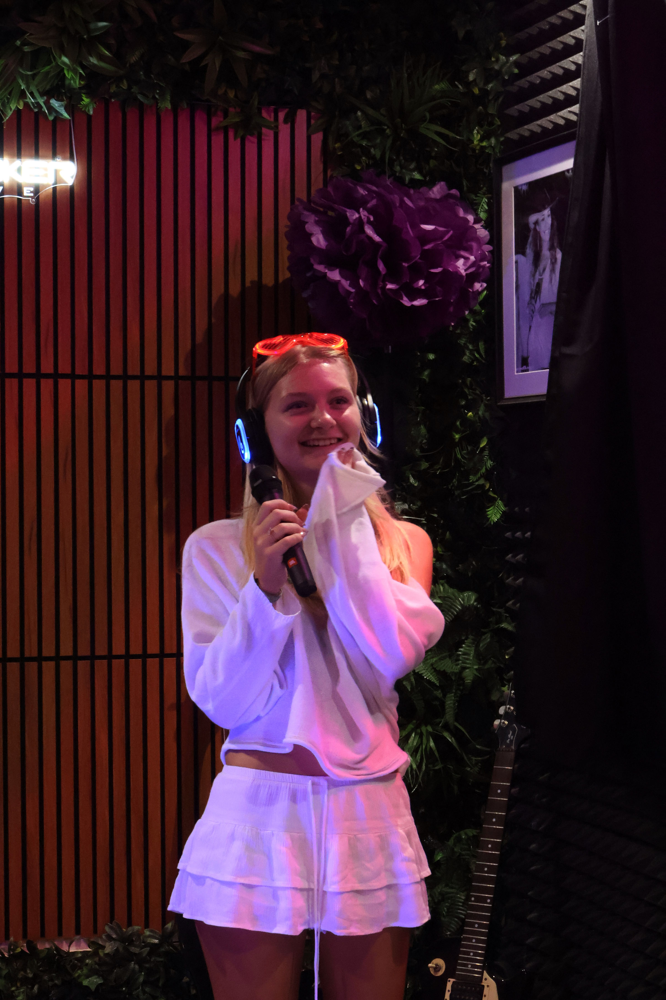

SoundBunker Algarve × The Hub Culture
THE HUB
ACADEMY
Professional creativity. Community opportunity. The next generation.
Central Loulé · soundbunker.pt
English
Creativity becomes confidence.
About The Hub Academy
The Hub Academy is a creative education and urban-skills programme for children and young people, created through the partnership between SoundBunker Algarve and The Hub Culture. Based in central Loulé, the Academy brings music, art, media, dance and urban sports together in one inspiring environment. Young people learn through practical workshops, one-to-one tuition and collaborative projects led by experienced creative practitioners. No previous experience is needed — just curiosity and a willingness to try.



What Young People Can Explore
Music and Audio
- Singing, rap and vocal performance
- Songwriting and creative expression
- Beat-making and music production
- Professional studio recording
- DJ skills and track selection
- Podcasting, voice-over and sound technology
Art and Digital Media
- Graffiti and responsible street art
- Drawing, lettering and mural design
- Photography and studio photoshoots
- Video and content creation
- Graphic design and visual storytelling
- Exhibitions and collaborative projects
Movement and Urban Sports
- Skateboarding fundamentals, balance and safety
- Skate progression, new tricks and a first drop-in
- Breakdancing and street dance
- Rhythm, coordination and freestyle
- Group routines, performances and cyphers
Ways to Take Part
- Weekly after-school clubs
- One-to-one tuition
- Small-group workshops
- School enrichment programmes
- Academy experience days
- Holiday, weekend and community projects
Learning by Doing
Every session is practical and project-led. Children create, record, perform, design and practise. Each programme is designed around a clear outcome — from a finished recording or artwork to a new skill, performance or exhibition.
Achievement Pathway
Progress is recognised through commitment, participation and personal development — not simply natural talent.
Hub Academy Patch System
Inspired by traditional scout badges, children earn bold, collectable Hub Academy achievement patches as they develop new skills and complete challenges. Each patch is heat-pressed onto their Academy uniform, creating a visible record of progress that they can wear proudly and use to show their individual talents.
Progression stripes can also mark each child's journey through Discover, Develop, Achieve and Lead.
What Young People Gain
- Confidence and self-expression
- Communication and teamwork
- Focus, discipline and resilience
- Problem-solving and independent thinking
- Respect for people, equipment and spaces
- A portfolio of creative work
Benefits for Schools and Groups
- Creative enrichment
- Student engagement and confidence
- Teamwork and social development
- Wellbeing and positive self-expression
- Practical media and technology skills
- Career awareness and community participation
Our Direction
Our vision is to create the Algarve's leading creative and urban-skills academy for young people — a place where professional facilities, specialist guidance and community spirit create genuine opportunity.
- Make creative education more accessible
- Build partnerships with schools, councils and youth organisations
- Develop affordable and funded programmes
- Work towards free opportunities for under-16s
- Identify young talent
- Connect skills with education and careers
- Create routes from first participation to performance, mentoring and leadership
Find Your Thing
Make a track. Learn to DJ. Paint a mural. Pick up a camera. Try your first skate drop-in. Join a dance cypher. Earn badges. Build confidence.
Schools · youth organisations · community partners